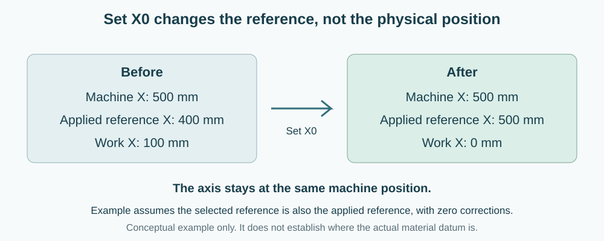

RADONIX · ROUTERXYZBC+TC · CHAPTER 8
Operator Manual · English · 8 October 2026
Work Origins and Zero Setting
Tell the application where the job belongs: identify the intended origin, choose the correct stored reference, and verify every accepted change before machining.
Expanded draft for review. This chapter explains software reference controls. Physical edge finding, surface measurement and tool setup must follow the approved method for the installed machine. Example numbers are not settings to enter.
8.1 Understand what the work origin tells the machine
A machining file describes positions relative to an agreed starting reference. The work origin is that reference for the job: the point identified as work X zero, Y zero and Z zero. Establishing it connects the positions in the file to the actual location of the workpiece or fixture on the machine.
Homing and work-origin setup answer different questions. Homing establishes the machine's own reference. Work-origin setup locates this job within that machine reference. A machine can be correctly homed while the selected work origin belongs to yesterday's material or another fixture.
The origin is not automatically the nearest corner, the centre of the material or its top surface. Those are possible choices made when the job is prepared. Your task is to identify and establish the choice required by the approved job information, not to choose a convenient zero independently.
| Item | Question to resolve |
|---|---|
| Horizontal origin | Which corner, centre, fixture datum or other defined point represents work X/Y zero? |
| Height origin | Does work Z zero refer to the material top, fixture/table reference or another documented plane? |
| Stored reference name | Which of G54–G59 does this job require? |
| Physical setup | Does the current material location and orientation match that definition? |
| Tool state | Is the fitted tool identified and is its applicable correction valid? |
A datum is simply an agreed reference feature or surface from which a position is established. If the job sheet uses that word, ask which physical feature it identifies. Do not substitute a visually convenient edge for a specified datum.
Setting zero changes a relationship, not the machine's location
The main-window Set X0, Set Y0 and Set Z0 commands update one coordinate of the selected stored reference using the current commanded machine position and applied corrections. They do not move the axis, search for an edge or measure the workpiece.
That absence of immediate movement does not make a reference change unimportant. The new reference can change where later programmed movement goes. A part can retain the same dimensions while its entire intended location shifts across the table or its cutting heights change.
Use Chapter 5 for the underlying coordinate ideas and Chapter 7 for deliberate manual movement. This chapter connects those ideas to choosing and changing the stored job reference.
8.2 Find the available reference controls
The reviewed main window exposes Set X0, Set Y0 and Set Z0. Each acts on one axis coordinate of the selected reference. These are actions, not text fields: pressing one requests an immediate reference update when the command is permitted. Do not click one simply to inspect its present value.
The reviewed main-window layout hides its direct reference-number fields and reference selector. You should therefore not expect a visible G54–G59 drop-down beside the zero buttons in this layout. Use the Configuration window's Reference branch to inspect or change the stored rows and the selection.
| Location or label | Purpose | Important distinction |
|---|---|---|
| Main window: Set X0 | Update selected reference X from the current position and corrections. | Does not update Y or Z. |
| Main window: Set Y0 | Update selected reference Y. | Does not move to a material edge. |
| Main window: Set Z0 | Update selected reference Z. | Does not measure the tool or locate the surface. |
| Configuration → Reference → CurrentReference | Select one of the six stored reference rows. | The numeric selection identifies a row; it is not a coordinate. |
| Configuration → Reference → G54 through G59 | Inspect or edit the named row's X/Y/Z reference coordinates. | Opening a row for inspection is not the same as selecting it for the zero buttons. |
| Main window: Machine position / Work position | Read the coordinate presentation. | A work readout can depend on the prepared program's reference as well as corrections. |
Access is part of the procedure
Complete the required operator login before machine interaction. On entering Configuration, the application may request engineering credentials according to its configured access session. Follow the authorized login process and the access available for the relevant fields. Do not borrow credentials or change permissions to carry out an unexplained reference edit.
If you are authorized to use the main zero buttons but cannot inspect or change the selected reference through Configuration, have the responsible person confirm the required row before proceeding. Guessing the selection is not an acceptable substitute for knowing which setup you are changing.
FIGURE 8-1 · SETTINGS SCREENSHOT REQUIRED
The Reference branch and the selected row
Supply an English Configuration screenshot with Reference expanded, CurrentReference visible and a named G54–G59 row expanded to show X, Y and Z. Label the distinction between the row being inspected and the value that selects the active row.
Suggested image: assets/images/08-reference-settings.png. Do not fabricate a main-window reference selector: it is hidden in the reviewed layout.
The selected row and the origin actually used by a file are related but can differ. A file can explicitly request G55 even while the selector identifies G54. The zero buttons still edit the selected row. Sections 8.4 and 8.9 explain this distinction before it becomes a setup mistake.
8.3 Establish the physical meaning before changing a number
Begin with the approved job information. Identify the required work-reference name, horizontal datum and Z-zero plane. If the drawing or setup sheet does not make those clear, obtain the missing setup information before changing the reference. The software cannot infer the intended origin from the material's appearance.
Then establish the machine reference and the physical setup. Complete the required homing procedure, confirm that the material and fixtures are secured in their intended positions, and check the actual fitted tool and its applicable correction. A changed tool assembly can affect the relationship between head position and tool tip.
| Requirement | What must be known |
|---|---|
| Job identity | The file and setup sheet belong to the actual part and revision being prepared. |
| Reference name | Which G54–G59 row the job needs, including any additional rows used later in the file. |
| Horizontal datum | The actual feature defining X/Y zero and the approved way to establish it. |
| Height datum | The surface or plane defining Z zero, including any required measurement allowance. |
| Machine and tool state | A valid machine reference and valid correction for the actual installed tool. |
| Existing setup information | The old reference values and their purpose, especially if the row is used by another job or fixture. |
Position first, change the reference only when settled
If setting zero from the current position, reach the approved datum using the installed measurement and movement procedure. Then allow movement and stopping to finish. Do not press a zero button while jogging or while a measurement operation is still active.
The application blocks connected reference editing during motion, active program state, homing, positioning, tool operations and program preparation. Zero commands also require a connection. Numeric reference editing can be available offline, but an offline edit cannot establish where the physical tool currently is.
The zero command's software checks are not a substitute for your setup checks. In particular, do not assume that an enabled zero button certifies valid homing, correct tool length or physical contact with the intended datum. Those facts must be established through the relevant procedures.
Touching an edge is not always placing the tool reference on it
If a measuring method uses a cutter edge, probe tip, spacer or gauge, its geometry matters. The point being sensed can differ from the axis centre or tool reference used by the coordinates. The zero button does not ask what gauge was used and does not infer a cutter radius or spacer thickness from contact.
This manual deliberately does not prescribe a contact test with a rotating cutter, a paper thickness or an improvised probing move. Use the method qualified for the installed machine and tooling. The following sections explain the software action after that method has established what the position means.
If the current position should represent a known nonzero work coordinate, do not press zero merely to simplify the display. Have the corresponding reference value established by the approved setup calculation, then enter it through the numeric editing procedure.
8.4 Select and identify the intended G54–G59 row
RouterXYZBC+TC stores six named work-reference rows: G54, G55, G56, G57, G58 and G59. Each row contains X, Y, Z, B and C coordinates; angular values are in degrees. These names identify separate stored origins; they are not six accuracy levels or six stages of homing.
| CurrentReference value | Selected stored row |
|---|---|
| 0 | G54 |
| 1 | G55 |
| 2 | G56 |
| 3 | G57 |
| 4 | G58 |
| 5 | G59 |
The value 0 in CurrentReference selects G54. It does not set any coordinate to zero. Likewise, a row named G55 does not imply that any of its coordinates should be 55. Keep the row's identity separate from the numbers stored inside it.
- Identify the required row from the job information.
Do not assign the job to an unused-looking row without confirming what the file expects.
- Open Configuration and locate Reference.
Complete the requested access process. Read CurrentReference and translate its value using the table above.
- Inspect the intended named row.
Read all three coordinates, not only the one you plan to change. Record the existing values when they belong to a setup that must be recoverable.
- Change CurrentReference only if required.
Commit the intended selection and read the accepted value. The selected row must pass its coordinate validation; an invalid row can be rejected.
- Finish the Configuration transaction deliberately.
Use the acceptance or cancellation process in Section 8.8. After returning to the main window, remember which row the zero buttons will edit.
Viewing a row does not select it
Expanding G55 in the Configuration tree lets you inspect or edit G55. It does not, by itself, make CurrentReference select G55. If CurrentReference is still 0, a later Set X0 on the main window acts on G54.
Changing the selection does not erase the other rows. Each keeps its stored coordinates until explicitly changed. This is useful for multiple fixtures, but it also means an old origin can remain present after the physical fixture has been moved or removed. Stored does not mean currently verified.
A file that explicitly requests a reference can use it independently of this initial selection. Therefore, selection is necessary to know what the zero buttons edit, but it does not prove that every line in a loaded file will use that row. Review the file's required origins as described in Section 8.9.
8.5 Set X or Y zero from an established position
Use Set X0 or Set Y0 only after the approved setup method has established that the current corrected position should represent zero on that axis. The software command does not find the material edge. It records the reference implied by the position you have already established.
You can establish X and Y at different physical locations according to the approved method. Setting X does not require you to overwrite Y at the same time. This is why the controls are separate: each changes only the selected row's corresponding coordinate.
- Confirm the selected reference and the job requirement.
Check CurrentReference through Configuration as needed. Verify that this is the row you intend to modify, not merely a row recently viewed in the tree.
- Establish the X or Y datum using the approved physical method.
Account for the actual measuring tool, edge geometry or gauge. Follow the manual-motion procedure for every positioning move.
- Wait until the machine is settled.
Finish jogging, measurement and any other operation. Confirm the tool state and applicable corrections.
- Press only the corresponding zero button once.
Use Set X0 for X or Set Y0 for Y. The action updates that selected reference coordinate without requesting axis travel.
- Check the accepted stored coordinate and resulting presentation.
Inspect the named row if necessary. If the prepared program uses that reference, its corresponding work readout should reflect the new relationship. If it uses another reference, the visible readout may not become zero.
- Complete the other axis only when its own datum is established.
Do not press all zero buttons as a batch merely because one axis has been positioned correctly.

What value is actually stored?
For the chosen axis, the zero command takes the current commanded machine position and subtracts the applied tool offset and additional live correction. It stores that result in the selected reference row. It does not simply write the numeral zero into the reference coordinate field.
| Current machine X | Applied X corrections | New selected reference X |
|---|---|---|
| 500 mm | 0 mm total | 500 mm. |
| 502 mm | 2 mm tool correction, no additional correction | 500 mm. |
The example does not prescribe a correction. It shows why copying the Machine position into a reference field is not always equivalent to using Set X0. If corrections are present, the zero command accounts for them.
If the expected result is not obtained, do not press the button repeatedly. Read the selected row, messages and file's reference requirements. Changing the wrong row repeatedly cannot make the intended row correct.
8.6 Set Z zero without confusing surface height and tool length
Work Z zero defines the job's height reference. For one job it may be the material's top surface; for another it may be a fixture or table plane. A change between those conventions can alter cutting depth even when every number is entered accurately. Confirm the convention before positioning the tool.
Tool length describes a different relationship: how the actual installed tool relates to the controlled head position. The application applies tool correction when presenting work coordinates and placing the job. Setting work Z zero does not measure that length and cannot establish that the correction belongs to the tool currently fitted.
| Task | Question it answers | What it does not replace |
|---|---|---|
| Tool-length measurement/correction | Where is the relevant tool reference relative to the controlled head? | Locating this job's required work-zero plane. |
| Set Z0 | Which selected work-reference Z value makes the current corrected position zero? | Measuring the tool or confirming the physical surface. |
- Confirm the required Z-zero plane.
Use the setup sheet or approved job instructions. Do not assume every file uses the material top.
- Confirm the actual tool and valid correction.
Complete any required measurement through its own procedure and verify its successful result before using that tool to establish the job reference.
- Establish the intended position by the approved method.
Account for any gauge, spacer or probe arrangement. If the current position represents a nonzero work height, do not declare it zero.
- Wait for a settled machine and confirm the selected row.
The zero command must not be issued during the approach or measurement. Recheck that it will change the intended G54–G59 row.
- Press Set Z0 once and check the accepted result.
Read the stored Z reference and the program's resulting work-coordinate presentation. Wait for any preparation caused by the change.
- Verify the setup using the approved checking method.
A displayed zero is not an independent measurement of tool contact or cutting depth. Complete the required physical and job checks before machining.
A corrected-position example
Suppose an explanatory setup has machine Z 150 mm, an applied Z tool correction of 50 mm and no additional correction. Set Z0 stores selected reference Z 100 mm. With that reference applied, work Z is 150 − 100 − 50 = 0 mm. The head did not move and no measurement was made by the button.
If an additional live correction were present, the zero command would subtract that too. This is why you must understand the existing corrections before changing the origin. Do not remove or add corrections simply to make a sample calculation match your display.
Do not automatically set a new work Z zero after every tool change. First establish whether the physical job datum changed or whether the application should account for the new tool through its correction. Follow the approved workflow in Tool-length Measurement.
FIGURE 8-3 · APPROVED SETUP ILLUSTRATION REQUIRED
The specified Z-zero plane and measuring arrangement
Supply a labelled photograph or drawing of the installation's approved method. Identify the intended zero plane, tool reference, and any gauge or spacer whose thickness must be accounted for. Clearly separate a material-top example from a fixture-plane example.
Suggested image: assets/images/08-z-datum-method.png. Have the responsible setup specialist approve the illustration before use as an operating instruction.
8.7 Edit a known reference value carefully
Use numeric editing when an approved setup provides the reference coordinate or when an authorized correction has been calculated. The reference field expects the stored origin coordinate, not the work coordinate you want to see and not a relative movement distance.
For example, if the selected G54 X reference is 400 mm and you enter 2, the new candidate is 2 mm. It is not an instruction to add 2 mm to 400. If the approved change is to increase that reference by 2 mm, the final value would be 402 mm. Confirm the intended final coordinate before editing.
- Stop and identify the exact row and axis.
In Configuration → Reference, open the named G54–G59 row. Distinguish editing this row from changing CurrentReference.
- Record the old value and the reason for changing it.
Include the row name, axis and units. Keep any existing fixture/setup record consistent with the authorized change.
- Enter the complete new reference coordinate.
Use the approved millimetre value, including its sign and decimal point. Do not enter a desired work readout unless it has first been converted to the correct reference value.
- Confirm the field edit and reread it.
Use the editor's normal confirmation, such as Enter. Escape cancels an unfinished field edit and restores its accepted value; it is not a general undo for earlier committed changes.
- Resolve any validation error.
A rejected value has not become the intended setup. Read the accepted value and error information before proceeding.
- Check the rest of the row and finish Configuration.
Verify that untouched axes remain as intended, then follow the acceptance/cancellation process in Section 8.8 and review the prepared job.
| Situation | Meaning |
|---|---|
| Reference X is 400; replace it with 402 | The stored origin shifts by positive 2 mm on X. |
| Reference X is 400; replace it with 2 | The stored origin becomes machine-related reference coordinate 2, not 402. |
| At fixed machine X 500, change reference X from 400 to 402 with zero corrections | The displayed work X for that applied reference changes from 100 to 98. |
| Change only G55 Y | Other coordinates and other rows are not automatically copied or zeroed. |
When the current point should have a known nonzero work coordinate
The relationship is: reference coordinate equals machine coordinate minus the applied corrections minus the intended work coordinate at that point. In an explanatory X example, machine X 500 with no corrections should represent work X 20. The corresponding reference is 480, not 20 and not 500.
Use that relationship to understand an approved calculation, not to improvise a measurement method. If the corrections or physical datum are uncertain, obtain the correct setup value before editing.
Validation is a boundary check, not proof of the setup
Reference coordinates must be finite and within the configured axis course limits. The application marks invalid saved coordinates for explicit correction instead of silently replacing them with a convenient new origin. A row can become invalid after a machine-limit change even though its saved value has not changed.
A valid number can still belong to the wrong fixture, wrong row or wrong height convention. Passing validation does not prove that the material is at the specified datum or that the entire program fits inside the available travel.
The stored reference supports more precision than some main-window presentations show. Trailing zeros and rounding can change how a value looks. Verify accepted values through the appropriate editor and use the approved measurement precision; do not infer machining accuracy from displayed digits.
8.8 Finish Configuration and distinguish acceptance from cancellation
A confirmed field edit can affect the current reference and prepared-job presentation before the Configuration window closes. Do not think of every number inside Configuration as an inert draft waiting for OK. Field confirmation, final validation and saving are related but separate stages.
When the changed reference is relevant to an open job, the application may update its placement or start preparing it again. Keep the machine stopped and allow these operations to settle. Do not make unrelated changes while trying to determine the effect of one reference edit.
| Action | Meaning for reference work |
|---|---|
| Type an unfinished field value | A draft is being entered. Confirm or cancel it deliberately. |
| Confirm the field | The value is submitted to the bound reference and validation. An accepted change can affect the current job immediately. |
| Press OK in Configuration | The dialog performs its acceptance checks and saves accepted settings. Resolve any reported validation or save failure. |
| Press Cancel in Configuration | The dialog restores the edits recorded for that dialog session. It is not a universal undo for earlier actions elsewhere. |
| Set X0, Set Y0 or Set Z0 before opening Configuration | An earlier main-window reference action. A later Configuration Cancel does not undo it simply because the row was viewed there. |
Accept an intentional change
Before OK, reread the named row's coordinates and CurrentReference. Confirm that the change belongs to the intended setup and that no unrelated field was changed. If validation fails, use the reported field or branch information to resolve the actual issue. Do not replace other origins with zeros merely to make the dialog accept.
If saving fails, distinguish the current in-memory accepted value from what will be available after restarting. Read the message and resolve the save problem through the normal procedure. Do not assume that closing the application will silently repair it.
After Configuration closes successfully, wait for any preparation and check the resulting main-window presentation. Acceptance confirms the software transaction, not physical correctness of the job origin.
Cancel an abandoned Configuration edit
Use Cancel when you do not intend to keep the dialog's changes. The dialog records its own committed edits and attempts to restore those values. Changes outside that transaction, including earlier main-window zero actions, are outside that cancellation scope. Closing Configuration is not a recovery method for an unknown sequence of prior edits.
After cancellation, inspect the row and the selection if their restoration matters to the next operation. Let any triggered preparation finish and read restoration errors if reported. Do not infer a successful rollback solely from the window disappearing.
The six reference rows and their selection belong to saved application settings. Normal application exit saves settings through the existing mechanism, while Configuration OK also persists accepted settings. Keep the setup record accurate and pay attention to save errors; never assume a restart resets the origins to harmless defaults.
Detailed Configuration behaviour is covered later in Using the Configuration Window. For this chapter, the essential habit is to know which change was accepted, which transaction could restore it, and what the actual reference values are before movement resumes.
8.9 Understand which origins the machining file actually uses
The selected reference is the application's initial choice and the target of the main-window zero buttons. A machining file can also name work references explicitly. Those names are part of the file's intended setup and can determine which stored rows its movements use.
You do not need a programming background to understand the consequence: the file may say “use G55 here.” Selecting G54 in Configuration does not rewrite that instruction to G54. Obtain the job's required origin list from the approved setup information and have unfamiliar file requirements explained before running.
| File situation | What to verify | Effect to expect |
|---|---|---|
| The file uses the selected initial reference without naming another work system | The intended CurrentReference and its stored coordinates. | Changing that relevant selection or origin can change job placement. |
| The file uses one explicit reference, such as G55, without initial-reference or machine-coordinate movement | G55's stored coordinates, even if the selector identifies G54. | The prepared job uses the explicit origin independently of that initial selector. |
| The file uses more than one work reference | Every used row and the fixture/setup belonging to each. | A relevant change may require the prepared job to be rebuilt, not simply shifted as one object. |
| The file includes machine-coordinate movement | The machine-coordinate destinations as well as work-reference setup. | Those destinations must not be assumed to shift with the work origin. |
| You edit a row unused by the file | That you really intended to modify that separate setup. | The current preview may remain unchanged. |
The important mismatch: zero button and displayed program
Suppose CurrentReference selects G54, while the loaded file explicitly uses only G55. Pressing Set X0 changes G54 X. The program may continue to be presented using G55, so the visible Work X does not necessarily become zero. That can be consistent software behaviour rather than a failed zero button.
Do not try to force the visible readout to zero by repeatedly changing whatever row happens to be selected. First establish the file's requirement and the intended row. If the task is to set up G55, select and verify G55 through the approved process before using zero commands intended for it.
What happens after a relevant edit
For a simple job using one work reference and no machine-coordinate movements, the application can update the placement of its retained geometry. You may see the preview shift without a lengthy loading process. This is still a meaningful change to where the job belongs.
When the coordinate relationships are more complex, the application prepares the retained program text again using the updated references. The file on disk is not rewritten by the reference edit. An unused-row edit need not alter the current prepared job, because the job does not depend on that row.
A machine-coordinate instruction, commonly identified as G53 in the file, refers to the machine frame for that movement. The exact mixed-reference path may need preparation again, but do not assume that changing the work origin moves every machine-coordinate endpoint. This is one reason a simple “shift everything by this amount” expectation can be wrong.
Do not compare unlike coordinate presentations
For a job using several origins, a displayed work coordinate for the prepared path need not equal the local coordinate written on every file line. The line can use another reference or machine coordinates. Verify the row values and the prepared placement rather than diagnosing a setup solely from two matching or nonmatching numerals.
Wait for all preparation to finish. If the application reports that reloading is required or preparation failed, resolve that condition before running. The mere presence of an old-looking preview does not certify that it reflects the final accepted references.
8.10 Verify the origin change before any machining start
After a reference change, verify both the stored setup and its effect on the prepared job. These checks answer different questions. The table tells you what values were accepted; the preview and job information tell you whether the intended operations have been placed as expected.
Do not immediately press Run or Go Ref to “see whether the zero is right.” Those are movement requests, not passive checks. First establish the reference and tool state, complete the required inspection and prepare any verification movement through the approved procedure.
- Check the exact changed row and axis.
Read the stored coordinate and confirm that it matches the intended setup. Confirm the unchanged axes as well.
- Check the selected reference and the file's reference requirements.
Know both what the zero buttons edit and what the machining file uses. Verify every used row for a multi-origin job.
- Wait for preparation to finish successfully.
Resolve reload or preparation messages. A previous preview must not be assumed current after an unsuccessful update.
- Inspect job placement, heights and transitions.
Compare the prepared job with the actual material, fixtures and required datum. Include noncutting travel and movements between references, not only the cutting outline.
- Recheck tool and correction.
Confirm that the present tool information is valid and that subsequent tools will be handled through their correct setup procedure.
- Recheck the intended starting point and operating state.
After preparation or a reset, do not assume an earlier selected start line or continuation situation is still appropriate. Treat the next start deliberately.
| Evidence | What it helps establish | What it cannot establish alone |
|---|---|---|
| Stored row and CurrentReference | The accepted values and selected row. | The physical material location. |
| Work-position readout | The current prepared coordinate relationship. | Tool contact, measurement accuracy or every file line's local coordinate frame. |
| Preview placement and dimensions | Whether the displayed job is consistent with the intended setup. | Unmodelled fixtures, tool clearance or physical correctness of the datum. |
| Successful preparation | The application has prepared the job with its accepted inputs. | That the operator selected the correct physical reference. |
Shape, size and location are separate observations
A simple origin shift can preserve part dimensions while changing location. If a rectangle remains the expected width and length, that does not prove it is over the intended material. Conversely, a preview that does not visibly move may be using a different row from the one edited.
Review the actual numbers and the required references, not only the apparent size of the drawing. A fitted or zoomed view can make different placements look similar. Use the available machine context and the approved physical checking process.
FIGURE 8-4 · BEFORE/AFTER EXAMPLE REQUIRED
The same job before and after a documented origin edit
Supply a controlled Simulation example with the named reference row, accepted old/new coordinate and resulting preview. Keep enough machine context visible to distinguish a shift from a zoom or view change. Identify the file's actual required reference.
Suggested image: assets/images/08-origin-preview-comparison.png. Explain which dimension remains unchanged and which placement coordinate changes.
If the check fails, leave the job unstarted. Identify whether the problem is the selected row, stored coordinates, tool information, file requirement or physical setup. Changing additional offsets without identifying the cause makes the original mistake harder to recover.
8.11 Resolve unexpected values without hiding the original problem
When a zero-setting or reference edit produces an unexpected result, stop making further changes and identify exactly what was changed. Record the row, axis, old and new values where known, selected reference, current tool and file requirement. A sequence of unexplained compensating edits is harder to recover than one clearly identified mistake.
| Observation | Check first | Do not assume |
|---|---|---|
| A zero button is unavailable | Access, connection, movement, program activity, preparation and tool/positioning operations. | That reconnecting or changing an origin numerically is the appropriate workaround. |
| A reference edit is rejected | The error message, numeric format, axis course limits and current operation state. | That the typed candidate became the accepted value. |
| Set X0 does not make visible Work X zero | The selected row versus the file's applied reference and the completion of any update. | That repeated pressing will select the correct row. |
| The head appears still but work coordinates change | The reference or correction that changed. | That the head must have moved by the same amount. |
| The preview does not shift after an edit | Whether the edited row is used by the file. | That no reference value was changed. |
| A previously saved row is marked invalid | Its values and the current configured course limits. | That replacing it with zero restores the fixture setup. |
| Cutting height appears wrong after replacing a tool | The actual tool, valid measurement/correction and the documented Z-zero plane. | That work Z should be changed immediately. |
| Cancel did not reverse an earlier main-window zero action | Whether the action occurred before the Configuration transaction. | That Cancel is a history-wide undo. |
| Reload or preparation failure is reported | The full message and the final accepted reference values. | That the old preview is ready to run. |
Recover an accidental edit from evidence
If the correct previous value is known from a reliable setup record, restore it through the authorized editing procedure while the machine is appropriately stopped. Then complete all normal preparation and verification checks. Restoring a number does not reverse physical movement that may have occurred after the mistake.
If the previous value is unknown, re-establish the datum using the approved setup method. Do not estimate it from a remembered readout or subtract a guessed amount from the wrong coordinate panel. A zero-looking display is not evidence that the old origin has been recovered.
The operation report records accepted reference coordinate changes with the row, axis and old/new values, and records accepted selection changes. These entries can help reconstruct what happened. Match them to the current session and physical setup; an earlier recorded value is not automatically appropriate after the workpiece has moved.
Keep machine-reference and job-reference problems separate
If machine position is uncertain after a collision, loss of reference or mechanical intervention, do not compensate by changing the work origin until the job appears aligned. Resolve the machine condition and required homing first. A shifted work reference can conceal the original problem and affect later tools or other workpieces.
Likewise, do not widen travel limits to make a rejected origin valid. Determine whether the coordinate, machine setup or limit configuration is wrong through authorized investigation. The ordinary operator's task is to report a complete observation and avoid further unverified movement.
If the required datum, reference name or tool correction cannot be established from the approved job information, obtain clarification from the person responsible for setup. That is a necessary input to the operation, not something the application can choose on your behalf.
8.12 Work through a setup example and check your understanding
The example below combines selection, zero setting and verification. All numbers are imaginary and assume a valid established machine reference, a correctly identified tool and an approved physical setup method. They explain the software relationships; they are not a contact procedure or values to enter on a real machine.
One selected and applied reference
Assume the job requires G54, CurrentReference selects G54, and the prepared file uses that same reference. There are no X/Y corrections. The applied Z tool correction is 50 mm, with no additional live corrections.
The approved setup method establishes X zero at machine X 400 and Y zero at machine Y 200. At the documented Z-zero plane, the commanded machine Z is 150. After each corresponding position has been established and motion has settled, the separate zero commands produce the following reference coordinates.
| Axis | Machine position at its established zero point | Applied correction | Stored G54 coordinate |
|---|---|---|---|
| X | 400 mm | 0 mm | 400 mm. |
| Y | 200 mm | 0 mm | 200 mm. |
| Z | 150 mm | 50 mm | 100 mm. |
The three physical positions need not have been established simultaneously. Each button updates only its axis. After all three are established, the stored row is X 400, Y 200, Z 100. Its Z value differs from the machine Z used in the example because the tool correction has been accounted for.
Later, at an illustrative machine position X 420, Y 230, Z 155 with the same applied reference and corrections, the displayed work position is X 20, Y 30, Z 5. That arithmetic confirms the coordinate relationship only. It does not prove fixture clearance, correct physical measurement or a suitable cutting start.
Now change the file requirement
Suppose instead that the file explicitly uses G55 while the selected row remains G54. The same zero-button actions still change G54. They do not establish G55 just because that is what the file needs. The correct response is to identify and prepare the required row deliberately, then verify the accepted values and resulting job placement.
This comparison explains why a reliable routine begins with the origin name. A careful physical measurement applied to the wrong stored row is still the wrong setup for the intended job.
Questions to discuss before independent setup
- Does successful homing establish the new workpiece origin?
No. Homing establishes the machine reference. The job datum must be located separately.
- Does Set X0 move the head to an edge?
No. It changes the selected reference's X coordinate using the current position and corrections.
- Does CurrentReference 0 mean all coordinates are zero?
No. It selects G54.
- Does opening G55 in the Configuration tree select it for the zero buttons?
No. Check CurrentReference separately.
- Why can Set Z0 store 100 when machine Z reads 150?
In the example, an applied Z correction of 50 is subtracted. The stored reference is not simply the machine reading.
- Does a spacer contact automatically account for spacer thickness?
No. The approved measurement method must account for the physical geometry before the software reference is established.
- What happens if an origin field containing 400 is replaced with 2?
The candidate reference becomes 2. It is not an addition of 2 to the old value.
- Can a file use G55 while CurrentReference selects G54?
Yes. Explicit file requirements can determine the applied origin independently of the initial selection.
- Does Configuration Cancel undo a Set X0 pressed before Configuration opened?
No. That action is outside the later dialog's change journal.
- Does a valid row and recognizable preview prove physical setup correctness?
No. Verify the actual datum, tool, fixtures, placement and required starting conditions.
Before handing over the machine, identify the job, required reference rows, accepted selection, tool state and any incomplete preparation or verification. Do not leave another operator to infer those facts from a work readout that happens to display zero.
The next chapter, Positioning, Return to Work and Parking, covers movement commands that use established coordinate information. Complete the reference checks here before treating any such destination as ready for movement.